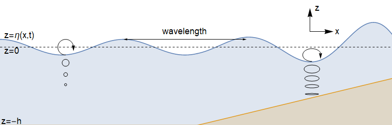

Water waves¶
The flow geometry¶
We consider the scenario shown below, where the axis \(x\) points in the direction of wave motion, and axis \(z\) points perpendicular to the water surface. We will assume plane motion, so there is no \(y\) dependence.
{kind=link}
The mass transport equation for potential flow¶
We make the simplifying assumption that the flow is irrotational, so that the velocity field can be written as the gradient of a potential \(\underline{v}=\nabla\phi(\underline{x},t)\), and we obtain from the incompressibility condition
Seeking a travelling plane wave solution of the form \(\phi=F(z)G(x-c t)\) provides
This choice of separation constant gives us exponential behaviour in the \(z\) direction, and oscillating behaviour in the \(x\)-direction:
We will take \(k>0\) and \(\phi_0=0\), without loss of generality.
Bernoulli’s equation for unsteady potential flow¶
Recall that we previously obtained the following result from Euler’s equation, with a body force \(\underline{F}=\underline{g}\)
Previously, we assumed that the flow was steady, and we took the scalar product with \(\underline{v}\) to eliminate the vorticity term, obtaining a result for the head \(H\) along a streamline. Here, we will not assume that the flow is steady, but we will instead note that for potential flow \(\underline{v}=\nabla\phi(\underline{x},t)\) the vorticity is identically zero, and so the equation of motion simplifies to
Integrating gives the following result, where \(F(t)\) is an arbitrary function that does not affect the velocities:
Free surface conditions¶
We assume that the flow is two-dimensional, so that the surface equation is of the form \(z=\eta(x,t)\). Dynamic boundary condition We will apply Bernoulli’s theorem on the surface. Since \(F(t)\) is arbitrary, we will take \(F(t)=\frac{p_0}{\rho}\), where \(p_0\) is the surface pressure (atmospheric pressure). Therefore we obtain:
Kinematic boundary condition¶
We define \begin{equation}S(x,z,t)=z-\eta(x,t).\end{equation} Since fluid particles on the surface must remain there, \(S\) is constant following the fluid. Application of \(\frac{DS}{Dt}=0\) gives
Linearized surface conditions¶
We will assume that the free surface displacement \(\eta\) and the associated fluid velocities are all “small”, so that the nonlinear terms appearing in the surface conditions can be neglected. We will justify these assumptions a posteriori. Recognising also that \((u,v,w)=\nabla\phi\), we obtain
Furthermore, by using Taylor series we may write
and by again neglecting nonlinear terms, we obtain
A note: The two conditions can be combined by eliminating \(\eta\) to obtain \(\displaystyle\frac{\partial^2\phi}{\partial t^2}+g\frac{\partial\phi}{\partial z}=0\quad \text{on }z=0.\)
Bottom conditions¶
Deep water For deep water, we impose a requirement that the velocity remains bounded as \(z\rightarrow -\infty\). Thus, in the solution given at the top of the page, we find that \(D=0\) and we have
The velocity components are given by
Finite depth¶
For shallow/finite depth water, we impose a condition of no flow through the bed. That is, \begin{equation}w=\frac{\partial \phi}{\partial z}=0.\end{equation}
Deep water results:¶
The dispersion relation for deep water Application of the surface conditions to the deep water solution we obtained for Laplace’s equation gives
Therefore we finally obtain
where \(A\) is the wave amplitude and the dispersion relation is given by
The phase velocity is \(c=\sqrt{\frac{g\lambda}{2\pi}}\), demonstrating that longer waves travel faster. Atlantic storms generate long waves of small amplitude (swell), which travel quickly (up to thousands of kilometers per day), and these waves arrive on the West Coast of Britain well before the slower-moving storm.
“Small amplitude” condition¶
In the dynamic boundary condition, we neglected \(u^2\) and \(v^2\) compared to \(g\eta\), and in the kinematic boundary condition we neglected \(u\partial\eta/\partial x\) compared to \(w\). Both of these assumptions are justified if \(Ak\ll 1\), which therefore requires that the wave amplitude \(A\) is vanishingly small compared to the wavelength \(\frac{2\pi}{k}\). For the longest ocean waves, such as waves generated by earthquakes, the approximation breaks down. For the seas around Europe the depth of the water over the continental shelf is far less than 1km, so a revised theory for shallow water is needed.
Particle paths¶
Assume that the particle motion is small compared to the initial displacement \((x_0,z_0)\), so that we can write
Then
[If you are wondering how these can balance, it is because the wave amplitudes are small: \(Ak\sim \epsilon\).] Integrating with respect to \(t\) and combining the results gives
The particle paths are therefore circular, and the radius of the circles \(Ae^{k z_0}\) decreases exponentially with depth.
Shallow water results¶
The dispersion relation for shallow water For gravity waves in shallow water, the velocity components are found to be
and when \(kh\) is small the dispersion relation is given by
The result implies that the peak of a wave will travel faster than the base of the wave, which leads to steepening of the wave profile and ultimately wave breaking, which occurs near to the shoreline. Notice that in shallow water the result for the phase-velocity does not depend on the wavelength. Shallow-water gravity waves are non-dispersive.
Exercises¶
Surface waves generated by a mid-Atlantic storm arrive at the British coast with a period of 15 seconds. A day later the period of the waves arriving has dropped to 12.5 seconds. Roughly how far away did the storm occur?
Water flows steadily with speed \(U\) over a corrugated bed \(y=-h+\epsilon \cos(kx)\), where \(\epsilon\ll h\) so that there is a time-independent disturbance, \(\eta(x)\) to the free surface, which would be at \(y=0\) in the absence of the corrugations. By writing
where \(\phi(x,y)\) denotes the velocity potential of the disturbance to the uniform flow, show that the linearised boundary conditions are
By assuming that the particle motions for shallow water gravity waves are small, describe the shape of the particle paths.
For deep water waves: (a) Calculate the total energy (per unit length in the \(y\)-direction) in one wavelength:
Deduce that the average wave energy per unit length in the \(x\)-direction is \(\bar{E}=\frac{1}{2}\rho g A^2\), where \(A\) is the amplitude of the free surface displacement. (b) From the linearised unsteady Bernoulli equation, the pressure perturbation caused by the presence of the waves is \(p_1=-\rho \frac{\partial \phi}{\partial t}\). The rate at which those pressure perturbations do work on a unit element dy in the direction dx is given by \(p_1\frac{\mathrm{d}x}{\mathrm{d}t}\mathrm{d}y\). Therefore, the average rate at which energy is transferred across a vertical section of the fluid is given by
Calculate this integral, and show that \(\bar{P}=\bar{E} c_g\), where \(c_g\) is the group velocity. The result implies that energy is transported at the group velocity.